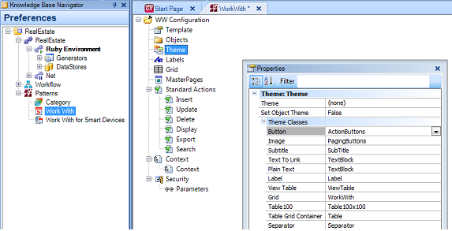

It allows assigning a button class, like the button classes in the Theme object of the Folder View Customization node.

Any of the values included in the combobox. The default value is ActionButtons.
Themes (X Evolution 3)